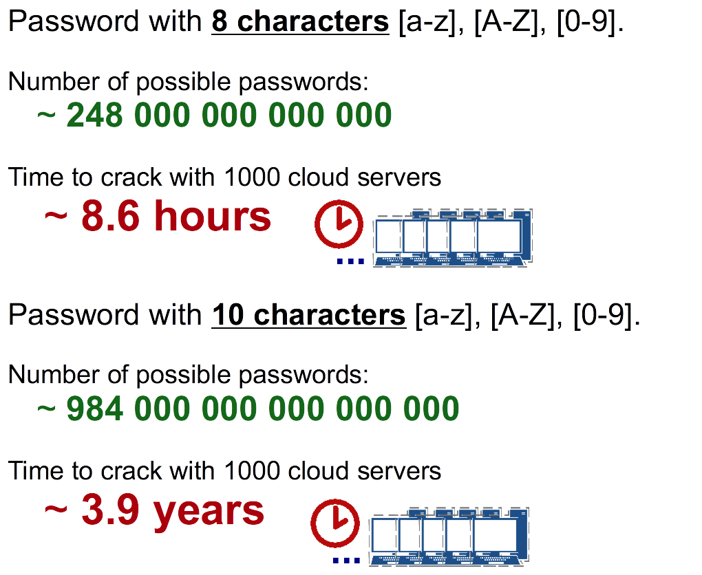
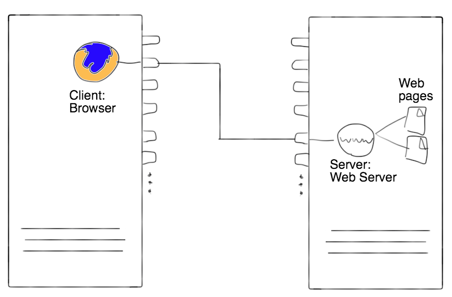
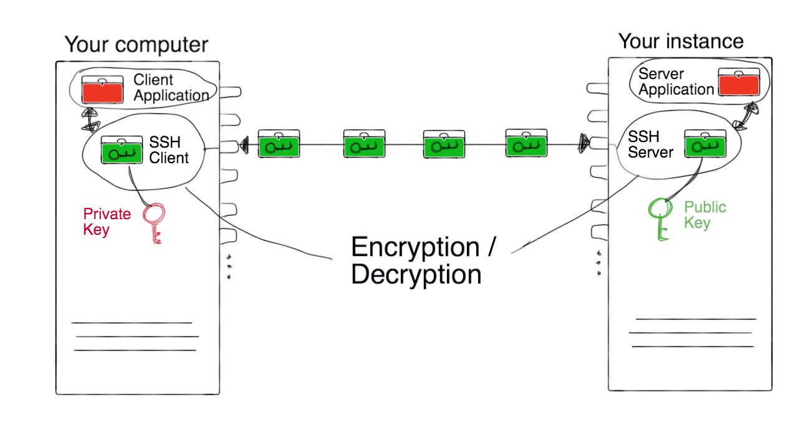
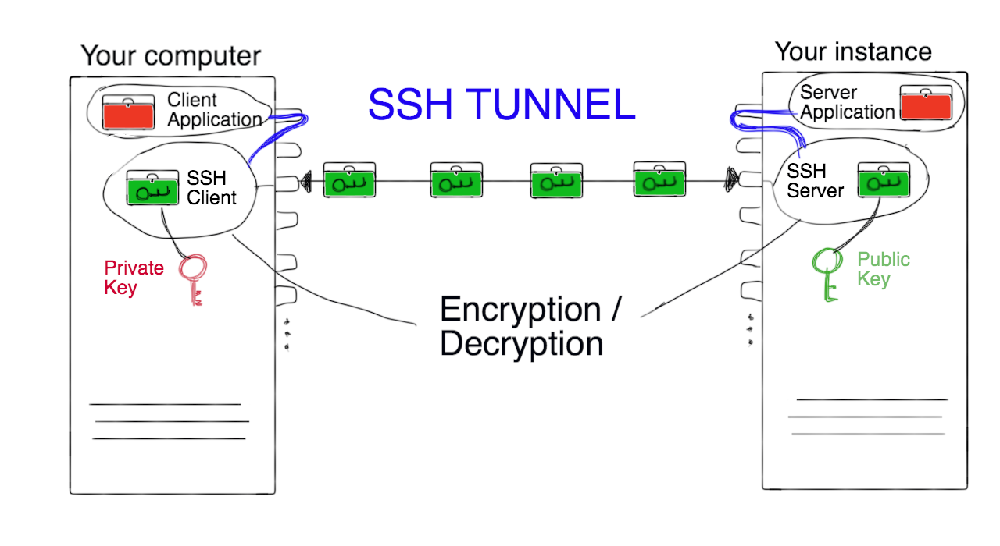

Module 5
The Research Cloud lifecycle
Sections of this module:
IntroductionConnecting and maintaining
Mitigating risks
Cleaning up
Getting support
Resource allocation requests
Summary
View all sections on one page (Printer friendly)
Mitigating risks
In this section you will guided through an overview of tasks involved in order to make your virtual machine secure and protect it against hacking attempts. In Module 8, we will be talking about security of cloud services and your virtual machine in more detail.
Choose secure Passphrases
Whenever you are prompted to choose a password for your services, you should always choose a secure passphrase.

Secure passwords consist of a combination of alphanumeric characters (letters a-Z and numbers 0-9), and special characters like the underscore _ and hash #. You should use a combination of all (a mix of uppercase and lowercase letters, numbers and special characters).
The password should be at least 10 characters long, and it should be hard to guess.
You should also be able to remember it, or save it in a secure place, to ensure you don’t lose access to your own services.
You should never share your password with anyone!
Note: You should avoid exotic special characters (e.g. umlauts) and white spaces as they may cause problems on some systems.
To get an impression of how significant the difference between various password lengths is, the figure below shows how long it would to take to crack a password when using 1000 cloud servers together to do the cracking:

You will need to choose passphrases at several occasions. For example, before you can establish a connection to your virtual machine, you will have to generate keys which encrypt the connection between you and the virtual machine. A key is associated with a passphrase and it is needed to access your instance. We will do this in Module 7.
Evidently, never share passwords or private keys with anyone not trusted. If you want to give someone access to your virtual machine, they should have their own keys to it, and not use yours. You can then block access to them any time by removing their key from your virtual machine. We will talk more about this in Module 7.
Firewall protection
The NeCTAR instances come with a firewall protection already in place. When you launch and manage your virtual machine, you will have to specify the firewall rules for it. You will use the Dashboard to create security groups, which basically are a collection of firewall rules. When you first create your virtual machine, the default firewall rules allows no access from remote by default — so by default, your instance is secure. However you will need to allow certain forms of access, otherwise you won’t be able to connect to the instance yourself.
While Module 7 will talk you through the steps of setting up the firewall rules, this is a good place to prime ourselves with some background knowledge.
To open up access to the virtual machine, you need to free up Ports in the firewall rules.

A Port is a communications endpoint to a logical connection between computers. Typically, a computer is provided with several ports which can be used by applications to establish communications.
You can think of a Port like a plug: a network connection between two applications is established when two such plugs are connected. Then, the two applications can talk to each other via this connection.

On our local computer’s end of the connection, our application running on our computer is used to send commands to the remote computer (e.g. the VM), and on the remote computer’s side the commands are received and processed by a matching application. The application on the remote machine is commonly called the server application, while the application on our computer is the client application. We say that the “server application is listening“ to incoming connections from client applications. After the connection is established, the applications can talk to each other.

Example: our client application may be the Firefox browser, which we use to load a website; The server application on the instance may be the web-server Apache, which retrieves the requested website file and sends it back to us. Both applications may communicate through Port 80, which is the default port to use for the insecure http protocol. So in order to allow your virtual machine to be a webserver, you need to free up Port 80 in your firewall rules (we will actually do this in Module 7). The Apache web server then “listens” on Port 80 and handles all connections which come into Port 80.
Note: If somebody would spy on your connection through Port 80 (the default http port), they will be seeing the websites which are being transferred. However for public Websites (e.g. your homepage), this is not a concern, as they are public anyway. If you wanted to encrypt the data being transferred (e.g. for credit card payments), you would need to set up a https connection for your websites instead.
Note that each Port that you free up is also a potential entry point to your instance. However, a server application needs to be “listening” to this port in order to establish a connection. If no server application is listening to the Port, it is also not possible to connect to it. You have to make sure that the server application which is “listening” for incoming connections on the Port is secure, or it could compromise your instance and make it vulnerable to hacking attempts.
Summary:
-
You should only free up Ports which are required, and not a whole set of ports.
Why? Say your VM gets infected and a malicious server application tries to open up access at some Port, say 5000. If you have freed up all ports, the malicious application will be successful. Freeing up only the necessary ports increases security because the likelyhood of finding an open port is smaller. If, for example, you free up only port 70 (to name a random choice), and a server application is listening for connections on port 70, there will be no free port which allows access from outside (because port 70 is already busy)! -
You should also make sure that the installed server application is secure (not some dubious software you downloaded from the internet) and that it is up and running, listening on this Port for incoming connections.
Secure Access
When you connect to your virtual machine, always use an encrypted connection. It is possible to set up insecure connections if you allow this on your firewall rules of your virtual machine — however for obvious reasons, this is not recommended.
To connect to the instance yourself, you should set up a ssh connection to the virtual machine or use other secure ways to connect. We will establish a ssh connection to the instance in Module 7.
SSH (short for “Secure Shell”) encrypts connections such that the data coming through can only be deciphered with the ssh key.
To establish a ssh connection, two keys are required: The private and the public key. When the key pair is generated, a passphrase can be chosen for extra security. The private key resides on the users computer and should never be shared with anyone. The public key is added to the remote machine (the instance). Only when the two keys are present at both ends of the connection, then a connection can be established and the data going through the ssh connection will be deciphered with the keys and the passphrase which was used to generate it.
By default, ssh uses Port 22. On the remote machine (the instance), an ssh server is be running which accepts connections from ssh clients.
Many applications use ssh to encrypt connections. For example, if you copy files between your local computer and the virtual machine, you may use the command scp to copy the files, which also uses the ssh protocol.
 The image above shows two connected computers: Your local computer and your instance. When establishing a connection, the ssh client and server are in charge for encrypting and decrypting the data packages which travel between the computers. The end client/server applications receive the unencrypted packages from the ssh server/client.
SSH Tunnelling
If you have an application which is not designed for a secure connection by default (e.g. the VNC servers we will set up in Module 7), you can still make the connection secure through the use of ssh tunneling. As the name suggests, this technique also uses the ssh protocol and operates through the ssh client and server applications communicating via Port 22. The nice thing about SSH tunnels is that they are encrypted. Nobody is going to see what sites you’re visiting, they’ll only see an SSH connection to your server.
Whenever you want to run an application which does not have secure connections in-built, ensure security by setting up an ssh tunnel.
SSH Tunnelling is best explained with an example. In Module 7, we will then go through the specifics steps to establish an ssh tunnel.
-
Imagine you want to connect to a server application (e.g. a VNC server) which is running on your virtual machine. This server application listens for incoming connections on Port 5901 and does not inherently support encryption. So if we connected our client application directly (e.g. our client application’s Port 5900 to the server application’s Port 5901), it would go through an insecure connection, and other people could be reading our communication with the server application.
-
To get around this, we can redirect all traffic between our Port 5900 and the server’s Port 5901 through a ssh tunnel. So all traffic from our local Port 5900 will be redirected to our local Port 22, which is used by our ssh client.
-
The ssh client will encrypt all data, and send it off through the encrypted connection to the server. The data then arrives at the remote computers Port 22, where the ssh server receives it and redirects it to its port 5901, on which the server application (e.g. the VNC server) eventually receives our data.
 The figure above shows the two connected computers again, but this time with a ssh tunnel (symbolised by the blue lines): The connection is “deviated” from the ports that the client/server applications think they are communicating through—so the applications are not aware about the communication actually going through Port 22. The tunnel has been set up to automatically catch all communications from the client/server ports (e.g. 5900/5901) and deviate it through the ssh connection. Note that the blue lines in the graph are only symbolic—the actual ports are not open to the outside in the firewall settings (except the ssh port of course).
The neat thing about this is that neither our client application nor the server application realise that the connection had been encrypted, so we don’t need to configure anything complicated in the applications: Everything is handled automatically by redirecting traffic through our ssh tunnel. The only thing you need to do is directing your client application to connect to the host localhost instead of the server. You usually specify the host as a URL, e.g. http://www.server.com or with the IP address of the server, and specify the destination port on this host. Instead, you now need to set it to localhost and the port you used for your ssh tunnel (5900 in the example above). You will also need to ensure that a ssh server is running on your virtual machine, but you will have one running already anyway, in order to connect to the server (we will do this in Module 7).
Limiting access
You should only grant access to your virtual machine to people you trust. Each person should ideally have their own user account and password on the instance, and use their own ssh keys. You should keep the main user account, which we will be using in the exercises in Module 7, only for administration purposes. You can add other users public ssh keys to the instance so they can connect to it—Module 7 also will show you how to do this.
Note: When you create a new user, you can give them administration (“root”) access by adding them to the user group sudo.
Protection software
Linux, Unix and other Unix-like computer operating systems are generally regarded as very well-protected against computer viruses, but they are not immune. There has not yet been a single widespread Linux virus/malware infection like on Windows. However, better safe than sorry.
Your VM is already protected by a firewall, but you may also want to install an AntiVirus protection.
Know your virtual machine and keep things tidy
-
Know your virtual machine! Monitor your system—you will then notice when something abnormal happens.
-
Many types of attacks specifically target Web servers. Use separate virtual machines for them, and keep your research work in a separate virtual machine.
-
Purge (erase) residual data from your storage before you shut your instance down or delete the storage. Module 9 will show how you can do this.
-
Don’t re-provision virtual machines constantly, rather keep optimizing one and then make snapshots of it. Re-configuring the same type of instance many times (which is quite common) poses a risk for human error — you might forget an important step when setting it up quickly. In Module 9 we will see how to make snapshots of our instance.
Encrypting data
Encrypt sensitive data before you upload or download it to or from your instance, unless you are already using an encrypted connection to copy files (e.g. scp or sftp). This will slow down the process of copying files, because they have to be encrypted and decrypted, so only do this if your data is critical. Also, the risk is added of losing access to your data forever if you lose the encryption key or forget the passphrase.
In Module 8 we will go through a few tools you may use to encrypt your data.
NeCTAR security guidelines
Please also read the security guidelines on the NeCTAR support website.
Summary
In summary, things to watch out for to mitigate risks:
- Use secure passphrases.
- Carefully configure the firewall.
- Always use secure methods of access (e.g. ssh logon terminals or ssh tunneling).
- Limit access only to trusted users.
- Know your virtual machine and keep things tidy.
- Encrypt your data.

 This work is licensed under a
This work is licensed under a